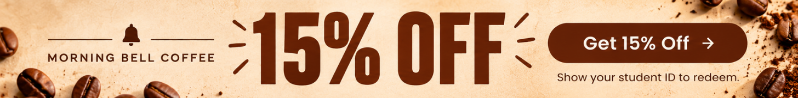
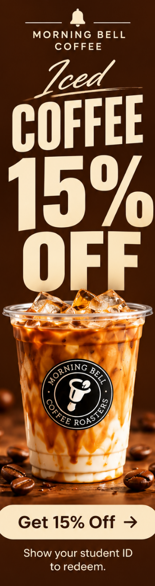

How to build a morning routine that actually sticks
Small habits, a little planning, and a favorite place to stop can make even the busiest class days feel more manageable.

Your guide to the little things that make college life better—from finding your next study spot to making the most of a busy week in Ames.
Small habits, a little planning, and a favorite place to stop can make even the busiest class days feel more manageable.
Explore simple ways to recharge, connect with friends, and enjoy a break without leaving town.
From setting realistic goals to taking intentional breaks, find a rhythm that works for your schedule.
Independent shops help make Ames feel like home and give students places to gather beyond campus.
Between assignments, shifts, and campus events, it's easy to forget to make time for yourself. Build a weekend around simple plans: an unhurried morning, a walk with a friend, and a little time to explore your favorite neighborhood spots.

Discover a local coffee offer designed with Iowa State students in mind.
Click the ad to view the campaign landing page.
Find a cozy place to read, reconnect with a friend, or take a quiet break from your to-do list.